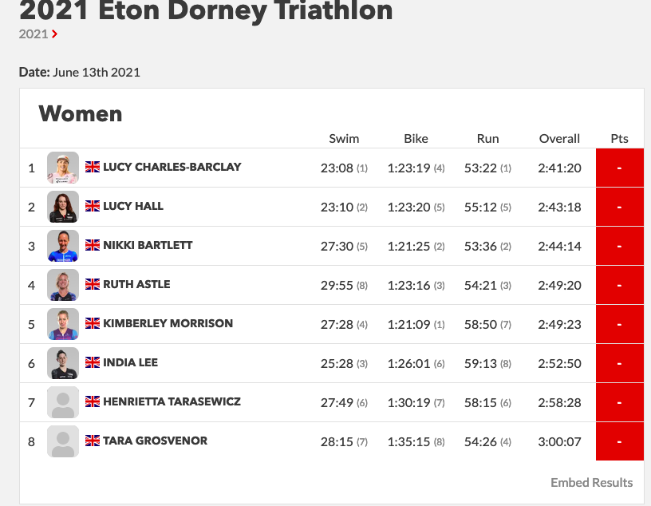

Introduction
In a previous post we described in detail why we believed the current ranking system to be sub-optimal. In this document, we motivate a new system for ranking triathletes, under new assumptions. We call our algorithm Tommy Rank - dedicated to Tom Vickery who introduced this problem to me. We propose variants of our algorithm and allow the reader to compare the outcome against the current system. Although Tommy Rank is not theoretically justified in itself, we describe its connection with the well studied Plackett-Luce model for ranking, that has been studied in detail for over fifty years. We decided to go with Tommy rank owing to its simplicity and transparency.
What the current PTO system gets right
Before we go about proposing new methods, it’s important to highlight what the current system gets right.q
Triathlon is not really a head to head sport but it kinda is
In order to score a performance, the current system pits an athlete against the clock and not against each other. We have already argued that pitting athletes against the clock is not meaningful, but by not pitting them against each other; the current system circum navigates the problem of disjoint universes (or sparsity) i.e. athletes do not race each other often – so there is no way to compare them directly. Someone with a little background in ranking might argue that this problem exists in Chess, American College Football, Scrabble, Video Games, Pro Tennis and many other sports. They get around it using modifications of the extremely well studied ELO. All of the above sports navigate the problem of sparsity by making the assumption of probabilistic transitivity, which states – if A beats B with high probability and B beats C with high probability, then A also beats C with high probability. This is not untrue of triathlon, however such a model also makes a assumption which does not hold true for triathlon. The assumption is as follows: Assume two players A and B play a Tennis match against each other. A is the highest ranked player in the world, B is a new player with provisional rankings. If B were to beat A, A’s loss on that day can be attributed to B’s skill on that day being higher than B’s expected skill. If both A and B had performed to their expected skill level, A should have won. Given this assumption, it is fair to reward B with a lot more points for beating someone much higher than their skill level, as they performed much better than our expected belief of their skill.
This does not hold in Triathlon. Consider the 2019, women’s race in Kona. Daniel Ryf went into the race with the following record.

She had won every race she had participated in and went on to have an off day at the race. On this day she came in at 13th. In a head to head model, all 12 athletes that beat her did not necessarily race much better than their expected skill. They might have done as was expected of them. It just so happens that Daniela Ryf had a tough day and peformed much lower than her expected skill level. So it would seem unfair to reward all of these other athletes as if they had performed much better than expected because they beat the best athlete in the world. We cannot take the results of a race, convert them to pairwise head to head battles and use ELO. The score update of pairwise rankings does not directly transfer to the world of triathlon.
What the PTO currently does, is ignore this problem completely. They decided to base the scoring system based on an expected finish time known as AIT. Every athlete races the clock. The clock is there for every race. This ignores who you are racing or how someone else does with respect to you. This is not a bad idea in principle but winning a race with strong competitors is still harder than winnning a race with an easy field. Therein lies the problem to be solved – athletes might race the conditions but winning is harder if other people racing the same conditions are very good.
Drop Outliers
The scoring system only takes the top 3 races for an athlete. While there has been no theoretical justification as to why the number 3 was picked; the community seems to have accepted the number as fair. By only taking the top 3 races, it allows athletes to take risks in races and not fear blowing up. This also implies that we do not reward consistency. As an athlete you are always incentivised to put all your chips in the pot and go for it. If you blow up, we will just drop this race from the ranking. As long as you do not blow up all the time, a bad performance does not hurt your score. This is unique to triathlon to the best of our knowledge. In this universe a bad performance does not hurt you. It is simply like it did not even exist. You are measured only by your good performances. Not many ranking systems in the wild employ this strategy. Imagine having a day job where we ignore your screw ups? As a direct consequence of such a system, Daniela’s Kona 2019 performance or Jan’s 2017 Kona performance do not affect their scores at all. It remains a philosophical question for the people in the sport to decide whether it should or not.
It is difficult to game
One of the strongest attributes of the current system is that it is impossible for athletes to game. Given that nobody knows before a race how many points can be gained from a race, it is impossible for athletes to cherry pick races. It just so happens that some races give athletes an unfair advantage. However there is no easy way for an athlete to know this before hand and game the system.
What does not work
Now we address the issues of the current system. We have already described in detail how the current scoring system does not align with the motivation of the sport. Here we list the major points only. For a detailed study refer to this work.
AIT is not calibrated with what perceived difficulty
In our opinion this is the biggest disadvantage of the current system. Based on the discssions we have had so far, athletes value certain races higher than others because of the strength of the field. While the performance of an athleqte is not affected by the strength of field, their final position in the race is. In section“I beat the best athletes and was worse off for it” we show how often this happens. If you did not read the previous post, here is a couple of choice examples, Fenella Langridge was awarded 82 points for finishing 7th in Challenge Day, while Nikki Bartlet received 83 points for placing third in Eton Dorney Triathlon. Similary Lucy Hall won 87 points at Eton for a second place, whereas Amelia Watkinson earned 88 for a 5th at Challenge Daytona. Popular consensus from interviewing fans and athletes was that a top 6 at Challenge Daytona was a bigger accomplishment and should be rewarded accordingly. The system is flawed by design - As an athlete one can only beat other athletes they are faced with. Without prior knowledge of the maximum available points, it is impossible for an athlete to seek out races with meaningful points. The system must encourage tqhe best to compete with the best. Only then can the rankings be taken seriously. The AIT score as exists today is more of an opinion than a mathematical model.
It leaves athletes and fans in the dark
Triathlon is a spectator sport. The current ranking system has been described as too complex by. Shown below are the results of the Dorney Lake Triathlon.

The screenshot was taken on June 15th, 2021. The race concluded 2 days ago. The athletes still do not know how many points they collected. Given these scores are used to rank athletes and qualify for the collins cup, it is impossible for an athlete to know before hand who they have to beat or what time they must run to make it into the Collins Cup. Linked here is a video by Lucy Charles where she claims explaining the same issues. Despite winning comfortably, she did not know how many points she had acquired. We argue this complexity prevents the average spectator from investing in the tournament. In the UEFA champions league knockout stages, everyone is aware of the results that would allow their team to go through. This knowledge creates pre-game excitement and also allows teams to set up accordingly.
It has no theoretical justification or transparency
We’re aware most readers would not consider this to be a weakness. One of the advantages of ELO based rankings is that has a rich history of mathmetical justification. The approach is designed with assumptions clearly stated. Note: This does not imply the system is perfect. It implies there is a reasonable understanding of the current flaws in the system. The understanding of how and why the scores are updated in ELO are transparent. Glickman wrote his phD thesis understanding these rankings and debating its implications and flaws. The same cannot be said for AIT. Why did we pick top 3 races in a year? Why does 0.15% difference result in 1 point advantage? How is AIT calculated? What are the justifications for that formula. Although, we acknowledge these questions appeal more to academics than average fans and athletes, in absence of rigor, a scoring system should be simple and fair. The current system seems complex and theoretically unjustified, which is the worst of both worlds.
It treats 70.3 and IM as the same
Popular consensus is that the skill does not always transfer as well. I am not an athlete and am not qualified to assert this claim but it has been cited here
Tommy Rank - A Simpler Ranking System
No ranking system is perfect. Someone always gains a little and someone always loses out. There is no free lunch. Really! See this What makes a good ranking system? We argue that it must be
- Simple and easy to understand. An athlete or a fan should know before and after a race the exact amount of reward they receive. The process should be transparrent.
- Should not be gamed or unfair. It should align with a human perception of fairness. We would like to say For an athlete A ranked to be higher than B, we must be able to say that if A raced B often, A would beat B with high probability. This probability must be justified with empirical results.
- It should align with the incentives of the sport.
We acknowledge that these properties are somewhat subjective and not always quantifiable mathematically. But such is the nature of the world we live in. Put colloquially, we would like athletes to feel that they have been screwed over people as infrequently as possible. We want to do this by clearly stating our assumptions and justifying our decisions mathematically.
Notation and Preliminaries [Skip if math notation is scary]
Let set \(X = \{x_1, x_2, \dots, x_N \}\) represent athlete roster. Let \(R = \{r_1, r_2, \dots, r_k \}\) represent the k races in a race calendar. Let \(w_i \in \mathbb{R^+}\) for \(i=1, 2, ..., k\) be the perceived importance of a race. One can also think of \(w_i\) as the strength of field of a race. The world championship races and PTO organised championships are expected to have higher value \(w_i\) than local races. The points awarded to an athlete are simply based on their finish position. For a given race \(r_j\), the points accumulated for finishing in the i’th position is \(\gamma_i*w_j\), where \(\gamma_i \in \mathbb{N}\) is an integer. It represents the value obtained from finishing a certain position. Our model is already used in Formula 1 (rather we borrow it from F1), where the winner gets 25 pts, second gets 18, third gets 15 and so on. Using our notation formula 1 race scoring can be described as \(\gamma_1=25, \gamma_2 = 18\) and so on. With all \(w_j=1\) for \(j=1, 2, ..., k\) as all races are equal. We denote the points received by an athlete \(x_i\) in race \(r_j\) by finishing in position \(p_j\) as
\[ Q_i(p_j) = \gamma_p*w_j\]
We set the score to 0 if the athlete did not participate in a race or did not finish. Thus the premise is as simple as it can be. The points you get are based on where you finish in race and everyone knows what they are before hand. Triathlon’s great issue is that not all races are equal. This is where the strength of field comes in. Based on how the strength of field is calculated, the total points accumulated for a race changes. We will look to address the issues stated in part 1 in the computation of the strength of field
The final set of scores for an athlete in a calendar year is given by
\[ X_i = \{ Q_i(p_1), Q_i(p_2) \dots, Q_i(p_k) \}\]
The final ranking is based on the sum of highest \(m\) scores. The PTO sets \(m=3\). \(m\) can be though represents the consistency factor. If \(m\) is high, then to be ranked high at the end of the year, the athlete needs to place high consistently at races. If \(m=1\), it says having one incredible race is good enough. The strength of field parameter dictates the maximum amount of points one can obtain from a race.
So all that is left is to decide what \(\gamma\) should be and how to calculate \(w_i\) for race \(i\). The choice of strength of field and gamma produces a unique alogorithm.
The above math in simple words
The points model is as follows:
The points received from a race are like Formula 1 i.e. based on your position. First gets \(\gamma_1\) pts, second gets \(\gamma_2\) pts and so on.
Not all races are equal. Some races are Cat A races like Kona, IM 70.3, Challenge Daytona etc. Some races are Cat B races like IM Tulsa, IM St.George, Challenge Roth. For any race, there is a formula to calculate the strength of the race. Based on this score we categorise the race into different categories. The final score obtained for a race, is the position score times the strength of field discount. One can imagine Kona being the pinnacle has a strength of 1. A second tier race like IM Tulsa has a strength of 0.9. A local race like Wisconsin could have a strength of 0.7.
Assume coming first gets you 25pts. If you come first in Kona you get the full 25pts. Coming first in Tulsa gets you \(0.9*25=22.5\) pts and Wisconsin gets \(0.7*25=17.5\) pts.
Based on how the strength of field and discount factor is calculated, we get different methds. In the next section we describe the different methods.
The final score for an athlete is simply, the sum of the best 3 races in a year calculated using the above formula. In the case of ties, we look at head to head record to break ties. If that is tied as well, then we deem the the athletes to be the same rank.
A mini rant (not to be taken personally)
Take a look at the following performances and tell me who had the better year? Especially when you only consider the top 3 performances.

Both have won multiple races. Both have come second occassionally. They have never raced head to head and both have occassionally bonked. One of them was ranked 2nd for the end of the year performance; the other 15th. If the sport rankings want to be taken seriously, they need to have real professional races. Lionel Messi does not play in your cities local Sunday league tournament. Lucy Charles Barclay should not race in Eton Dorney as a pro either. I know it is part of the culture of triathlon to let amateurs and pro’s mix but it makes it near impossible to actually rank and score them. We will later prove this impossibility formally in the Plackett-luce model. There has to be fewer races and the top dogs should show up to race them. Till then, triathlon rankings will always remain controversial and debatable.
Rant over.
Simulations
Instead of describing the algorithms immediately, we allow the reader to interact with them directly and judge if they are fair. We have written up multiple variants of our model, to allow the reader to decide what they find simple and fair.
Tom’s Heuristic (Approximate Tommy Rank)
This method is NOT mathmetically justified. It is based on a set of heuristics that Tom uses based on his experience. Given that he has been in the sport for over a decade, a ranking system based on his perceived fairness is not a bad place to start. It is simple and appeals to intuition. It follows the general model described above.
Tom does not like Maths. He has no need for theoretical justification of a ranking system. Tom believes the higher the prize money of a race, the stiffer the competition. Therefor the points awarded for a race should be based on prize money. This is not an unreasonable assumption - If the perceived strength of field does correlate with prize money, it’s a simple and yet “fair” scoring system.
Also being a motorsport fan, he wants to use the well understood Formula 1 scoring system because of its simplicity. NOTE: Formula 1 also did not justify their scoring theoretically, but when something is simple and perceived fair – you do not need to.
1st – 25pts
2nd – 18pts
3rd – 15pts
4th – 12pts
5th – 10pts
6th – 8pts
7th – 6pts
8th – 4pts
9th – 2pts
10th – 1ptSo going back to our math notation from before \(\gamma_1 = 25, \gamma_2 = 18\) and so on. For the strengh of field, he claims there are 3 types of races. Category A which is for Kona, 70.3 worlds and very high prize money - 200K and above. Category B which was consists of most big regional races with prize money pools of 60K-200K and Category C for 60K and under which consists of local races.
Disclaimer: We write Approximate Tommy Rank because we do not have the available prize money list for all historical races. Instead, score the races using the formula described below. Then we divide races into Category A, B and C based on manually picked thresholds. .
The strength of a race \(r\) is simply the sum of the start of the year PTO scores for athletes participating. Shown below are the scores for women at the end of 2018. These are the scores used for all of 2019. For example, if Daniela Ryf were to participate in a race, she would contribute 380.38 pts to a race. If Lucy and Daniela were to race, that race would get 380.38 + 343.64 pts accordingly.
The 20 most difficult races in 2019 based on our heuristic formula are:
------------------------------------
| CAT A | discount factor = 1
------------------------------------
im-hawaii 10361.0 [1] 650,000 USD
im-703-world-championship 6822.0 [2] 250,000 USD
------------------------------------
| CAT B | discount factor = 0.9
------------------------------------
im-703-st-george 4139.0 [3] $100,000
im-703-california 2835.0
challenge-samorin 2397.0 [4] € 150.000
im-703-elsinore 2288.0
challenge-salou 2238.0
im-703-texas 2201.0 [5] 150.000 USD
challenge-roth 2180.0
im-germany 2127.0 [6] 150.000 USD
im-703-chattanooga 2071.0
itu-long-distance 1913.0
im-cairns 1892.0
im-texas 1861.0
im-lanzarote 1847.0
im-western-australia 1844.0
im-cozumel 1796.0
im-703-victoria 1788.0
im-703-vietnam 1763.0
im-703-santa-cruz 1756.0
im-703-mont-tremblant 1625.0
im-south-africa 1607.0
im-703-coeur-dalene 1604.0
im-mont-tremblant 1556.0
challenge-riccione 1529.0
im-new-zealand 1496.0
im-703-boulder 1488.0 [7] 60,000 USD
im-703-santa-rosa 1484.0
challenge-daytona 1483.0
im-703-taiwan 1454.0
The 10 weakest races were as follows:
im-malaysia 263.0
challenge-madrid 244.0
im-703-ecuador 243.0
im-703-buenos-aires 238.0
im-703-rio-de-janeiero 238.0
challenge-gunsan 213.0
challenge-vietnam-half 178.0
im-703-eagleman 156.0
im-703-japan 141.0
im-703-weymouth 136.0
SOURCES FOR PRIZE money listings
[1] https://www.redbull.com/gb-en/kona-ironman-stats
[2] https://www.muscleandfitness.com/features/challenges/ironman-ups-prize-money-703-world-championship/
[3] https://protriathletes.org/race-preview-ironman-70-3-st-george/
[4] https://thechampionship.de/races/the-championship/
[5] https://www.trirating.com/ironman-germany-2019-analyzing-results/
[6] https://protriathletes.org/weekend-preview-ironman-70-3-texas-challenge-shepparton/
Shown below is the strenth distribution using our formula and prize money for choice races in 2019. We show this to justify that our approximate ranking score is a reasonable. However, in practice for Tommy Rank, the prize money should be used to decide the strength of field. The 2020 prize money distribution for some races can be found here. We cannot speak to the veracity of this link. It was obtained via Google Search.
Shown above is the distribution of strength of field in 2019 based on our heuristic. Based on inspection, we pick thresholds 5000 and 1500 to divide races into Cat A, B and C. The reader might point out that we are using the PTO scores which we claimed to be sub optimal. While that claim is true, we are quantising the races into coarse buckets – most ranking algorithms will produce similar quantisations. We do not expect the PTO races to rank an elite athlete nearly 40 places lower than expected. Later, when we introduce the much studied Luce-Plackett ranking, we will observe that the quantisations are comparable. Finally, this is an approximation of prize purse. So it does not really effect the true algorithm. When the prize purse is available use that instead.
Using the notation described above \(w_i = 0.7\) if strength of field for \(r_i \leq 1000\) i.e. Cat C races. Cat A needs the strength to be greater than 5000 and everything else is Cat B which gets a \(w_i=0.9\).
In summary the score obtained by an athlete for race \(r\) is simply, the discount factor times the position reward. Thus if one were to win a Cat A race, they get 25pts. A cat B race gets you \(0.9*25=22.5\) pts and finally winning a Cat C race gets you \(0.7*25=17.5\) pts. For yearly rankings, similar to the PTO we sum the top 3 performances in a year.
The biggest drawback of this method is that it is not principled in its selection of quantisation thresholds and it uses PTO scores. There is no theoretical justification to using the prize purse either. We do not justify our use of Formula 1 scoring either. However, the method has a few strong properties:
- It is simple and transparent.
- It is difficult to game.
- It encourages the best athletes to compete with each other. Knowing you cannot get many points from smaller regional races, it promotes the best competing against the best.
- It allows independent races to allocate prize money and attract the best racers. It prevents the sport from being a monopoly.
- The method still follows the general mathematical model we described. It’s just happens that the parameters of the model were picked based on intution. Specifically, the formula for strength of field is not mathematicaly derived but based on prize purse. Replacing the approximate Tommy Rank with available prize money (Tommy Rank) is a reasonable heuristic.
- This ranking system has parameters that can be tuned for change different models of fairness. For example, the discount 0.9 and 0.7 were plucked out of thin air. It is possible to align those numbers to the populations perceived difficulty of a race. Similarly, the ratio of points awarded to second vs third is up for debate. They should represent the athlete populations inner value of coming second over third.
Plackett-Luce (Primo Rank) [Ignore if not interested in Maths]
This model has been studied for nearly 50 years since the axioms of choice theory were written. Researchers have derived and re-derived the base equations based on different assumptions. However, being more complex than Tommy Rank, we are not always a guaranteed a solution.
An incomplete in progress writeup of this algorithm can be found here. For the impatient, we directly provide links to the material we summarise in the blog post. I’ll put up Primo rank in the next 2 weeks, when I have time to implement the MM method. I very much doubt this can be used in practice, but will write it for taste.
- Luce Plackett in R
- MM methods for MLE for Luce Placket
- Optimsation Transfer using Surrogates
- Luce Placket as Markov Chains - An entire PHD thesis can be found on this topic.